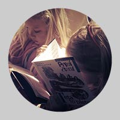
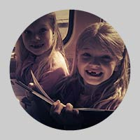

7. 5. 2014 | 17.03 | Radka Tesárková
V dubnu proběhla krajské kola recitačních soutěží a členové Ty-já-tru byli opět úspěšní. Natálie Trantinová získala v II.kategorii Pražského poetického setkání (Dětská scéna) Ocenění za kontakt s divákem (René Goscinny, překlad Tamara Sýkorová, Baterka) a Jáchym Hájek v I. kategoriii Pražského Kalicha (Wolkerův Prostějov) Ocenění za radost z vyprávění a kontakt s divákem ( Douglas Adams, překlad Jana Holanová, Stopařův průvodce galaxií). Oběma oceněným gratulujeme!
17. 4. 2014 | 14.12 | Radka Tesárková
Během velikonočních prázdnin výuka v Dívadle Radar neprobíhá.
15. 4. 2014 | 19.22 | Radka Tesárková
Postupové zkoušky do výběrových souborů Ty-já-tru (Před oponou, Štronzo, Za oponou a Šupitopresto) se konají 28. 5. od 14.30 hodin a 12. 6. také od 14.30 hodin v Divadle Radar. K postupkám si, prosím, připravte přednes básně, či prózy zpaměti (starší si mohou navíc připravit ještě monolog), písničku lidovou, či umělou (vždy však mějte v zásobě tu lidovou). Pokud hrajete na hudební nástroj (a chcete se pochlubit, co umíte), nezapomeňte ho vzít sebou. Čekají na vás i mluvní etudy, pohybové etudy a ještě…
Ke zkouškám je nutné se přihlásit u uměleckého šéfa DDS Ty-já-tr Radky Tesárkové (tel.: 724 350 605).
10. 4. 2014 | 17.51 | Radka Tesárková
V krajském kole Wolkerova Prostějova (Pražský kalich) v konkurenci více než 25 recitátorů získal ocenění i člen DDS Ty-já-tr Jáchym Hájek. Za přednes textu Douglase Adamse Stopařův průvodce Galaxií získal "ocenění za radost z vyprávění a kontakt s divákem". Gratulujeme! Jáchyma a další úspěšné recitátory všech věkových kategorií si můžete přijít poslechnout do Divadla Radar v neděli 27. dubna v 17.00 hodin. Na programu totiž je pořad Trocha poezie nikoho nezabije.
10. 4. 2014 | 17.42 | Radka Tesárková
Více než šedesát dětí ve věku od pěti do patnácti let recitovalo minulý týden v rámci přehlídky Dětská scéna (Pražské poetické setkání) před takřka zaplněným hledištěm Radar texty svých oblíbených autorů. Porota ve složení Jitka Morávková, Monika Svobodová a Luděk Richter byla velmi spokojena, ale ve finále i příjemně vyčerpaná. Recitovat se totiž začalo ve 13.00 hodin a do svých domovů se porota spolu s nejstaršími recitátory a organizátory rozcházela až po 20. hodině. Recitační maraton. Výsledky, které naleznete v příloze, nejsou až tak důležité jako to, že si všichni zúčastnění parádně užili inspirativní odpoledne.
Výsledky
ke stažení zde


P.S. Knížky, které dostali ocenění recitátoři, udělaly velkou radost. Cesta tramvají s Agátkou a Barborkou vypadala takto (viz. foto výše). Odmítly vystoupit, neměly dočtenou kapitolu :-)
{kind=link}
{kind=link}
10. 4. 2014 | 17.40 | Radka Tesárková
Vážení diváci!
Omlouváme se, ale z technických důvodů rušíme premiéru inscenace Středa nám chutná v pátek 11. dubna. Těšit se na vás budeme v novém termínu a to 23. května od 18.00 hodin v Divadle Radar. Děkujeme za pochopení.
25. 3. 2014 | 17.20 | Radka Tesárková
Neděle 23. března patřila v Divadle Radar celá dětským divadelním kolektivům. Takřka sto dětí sedmi zúčastněných souborů (o dospělých divácích nemluvě) si svůj den opravdu užilo. A jak klání dopadlo?! Do městského kola Dětské scény v této kategorii postupují DDS Ty-já-tr - Štronzo (DDM Praha 7) s inscenací Archa Noemova a soubor Jižňata s inscenací Šli červotoči do houslí (ZŠ Jižní IV) . Do širšího výběru pak byl doporučen Ty-já-tr - Pátečníci (ZUŠ Praha 7) s inscenací z veršů Petra Nikla Ťutínci a ňunínci. O ceněným souborům gratulujeme a všem děkujeme za hezký divadelní zážitek.
19. 3. 2014 | 14.18 | Radka Tesárková
Vážení diváci,
představení Nejkrásnější válka, které mělo proběhnout ve středu 19. 3. se pro nemoc ruší. Další repríza se koná 23. 4. Děkujeme za pochopení.
17. 3. 2014 | 8.40 | Radka Tesárková
V obvodním kole recitační přehlídky Pražská kalich (Wolkerův Prostějov) má hned 8 postupujících do městského kola z celkových 12. Příjemné odpoledne, kdy výkony celkem 30 recitátorů hodnotila odborná porota ve složení Radka Svobodová, Hana Trázníková a Regina Havránková, se uskutečnilo 11. řezna v Divadle Radar. Všem oceněným gratulujeme!
VÝSLEDKY PRAŽSKÝ KALICH 2014 – PRAHA 7 (obvodní kolo)
1. kategorie – postup do městského kola:
Jáchym Hájek - DDM Praha 7 (Ty-já-tr), - Douglas Adams: Stopařův průvodce Galaxií
Milana Kudaeva- DDM Praha 7 (Ty-já-tr) – Marina Cvetajevová: Pořád se někdo ztrácí
Martin Novotný- DDM Praha 7 (Ty-já-tr) – Jules Verne: Dvacet tisíc mil pod mořem (ukázka)
Anna Poláková- DDM Praha 7 (Ty-já-tr) – Charles Bukowski: Dolar a dvacet centů
Kateřina Simandlová- DDM Praha 7 (Ty-já-tr) – Václav Hrabě: Léto v pohraničním městě
Václav Vestfál – gymnázium Arabská, Praha 6, Ludvík Aškenázy: Vajíčko
2. kategorie – postup do městského kola:
Anna Ondráčková – ZUŠ Lounských, Praha 4, František Nepil: Malujeme
Adéla Paruchová- ZUŠ Praha 7 (Ty-já-tr) – Václav Hrabě: Litanie za končícího rána
Čestné uznání:
Matěj Beneš- DDM Praha 7 (Ty-já-tr) Milan Husák : Koncert
Kateřina Špaňárová – ZUŠ Praha 7 (Ty-já-tr) – Michal Viewegh Můj život po životě
3. kategorie – postup do městského kola:
Barbora Černochová ZUŠ Praha 3 – Jaroslava Rösslerová: Jana na cestě (z knihy Dny v P.)
Magdalena Denková – ZUŠ Praha 3 – Slawomir Mrozek: Šípková Růženka
Ondřej Dostál - DDM Praha 7 (Ty-já-tr) – Christian Morgenstern: Básně v překladu Josefa Hiiršala
Kateřina Urbanová - DDM Praha 7 (Ty-já-tr) – Irena Dousková: Hrdý budžes
20. 2. 2014 | 0.18 | Kateřina Chadimová
Vážení diváci, představení Fimfárum, které jsme měli hrát v sobotu 22. 2. se z provozních důvodů ruší. Děkujeme za pochopení.
17. 2. 2014 | 0.47 | Radka Tesárková
V době jarních prázdninách pro Prahu 7 (24. 2.–2. 3.) výuka v kroužcích Ty-já-tru, včetně ZUŠ , není. Výuka ve výběrových souborech probíhá neomezeně (tj. v době prázdnin pro Prahu 1–10).
6. 2. 2014 | 23.06 | Radka Tesárková
5. února byly rozeslány přihlášky na Putování s huculem 2014.
6. 2. 2014 | 22.59 | Radka Tesárková
V sobotu 1. 2. 2014 proběhlo oblastní kolo soutěže pro dívky ve věku od 13 do 15 let pod názvem Dívka roku 2014. Výsledky soutěže: 1. místo - Gabriela Alexandrová, 2. místo - Anna Šollová (členka Ty-já-tru – Štronzo, gratulujeme), 3. místo - Tereza Šandová a cenu diváků získala Veronika Špitálská. Děvčata nejen, že předvedla ty nejlepší výkony, ale i se dobře pobavila. Celá akce byla doprovázena bohatým programem, a to tancem, šermem, kytarovým vystoupením, divadelní ukázkou či extravagantní módní přehlídkou.
{kind=link}
16. 1. 2014 | 9.25 | Radka Tesárková
Vážení diváci! Omlouváme se, ale z technických důvodů se ruší představení dne 25. ledna Kniha džunglí. Omlouváme se a zveme vás na další představení tohoto titulu a to ve středu 12. února od 18.00 hodin v Divadle Radar. Děkujeme za pochopení. Ty-já-tr.
4. 1. 2014 | 14.15 | Radka Tesárková
Přesně na Tři krále se děti z divadelního souboru Ty-já-tr vydaly do domovů seniorů ve Mšeně a v Mělníku, aby babičkám a dědečkům zahrály Rakovnickou hru vánoční. Inscenace se seniorům líbila a dokonce si spolu s dětskými herci na závěr zazpívali i řadu koled. A nutno podotknout, že jsou výborní zpěváci! Už teď se všichni těší na další společní setkání. Fotografie jsou z Centra seniorů v Mělníku. Foto: Adriana Rohde Kabele

{kind=link}
{kind=link}
{kind=link}
{kind=link}
{kind=link}
{kind=link}
{kind=link}
{kind=link}
{kind=link}
23. 12. 2013 | 19.00 | Radka Tesárková
Spokojené prožití svátků vánočních a v novém roce jen úžasné divadelní zážitky přeje všem svým příznivcům Ty-já-tr.
16. 12. 2013 | 19.00 | Radka Tesárková
Vážení přátelé, milí účastníci projektu Čtenář na jevišti,
po dlouhém a náročném hodnocení dospěla pětičlenná porota k závěru a vybrala 5 nejzajímavějších inscenací. Volba to byla opravdu těžká, všechna představení jsou zajímavá a za všemi je vidět velký kus práce.
Do projektu zaslalo svou dramatizaci celkem 49 souborů. Videa a materiály, které jste zasílali, se nacházejí v různé fázi, v různé kvalitě a jsou to jen videa, neschopná postihnout mnohé podstatné a zároveň nemilosrdně odhalující kdejakou nepodstatnost. Porota se snažila odhlédnout od všech rušivých vjemů a vnímat obsah, práci a snahu dětí, která byla u všech úžasná.
Každý účastník si zaslouží naše velké poděkování za účast v projektu a zároveň velkou gratulaci za inspirativní aktivitu, kterou předvedl. Zároveň nás těší, že děti si našly cestu k literárnímu textu, že se učily s ním pracovat a dále jej interpretovat.
Rozhodli jsme se každému souboru zaslat poštou malou odměnu, zároveň v nejbližších dnech také každému souboru zvlášť zašleme naše hodnocení a postřehy, které, jak věříme, budou užitečné pro vaši práci do budoucna.
Vybranými soubory v náhodném řazení jsou:
Sekunda A Gymnázium Fr. Křižík a zákl. škola Plzeň, pod vedením Mgr. Jana Anderleho s inscenací Hanin kufřík
DDS Ty-já-tr Před oponou DDM Praha 7, pod vedením Radky Tesárkové s inscenací Středa nám chutná
5. třída ZŠ Raduň, pod vedením Mgr. Šárky Králové s inscenací Vadí, nevadí
Dramadlo ZUŠ Louny, pod vedením Bc. Mileny Nečesané s inscenací Nevhodná pohádka
Divadlo Bum Trach ZŠ s polským jazykem vyučovacím Český Těšín, pod vedením Marie Szymanikové s inscenací Loupežné vikingské výpravy
2. 12. 2013 | 10.31 | Radka Tesárková
Putování s huculem se v letošní sezóně uskuteční v termínu od 10. do 20. července 2014. Termín odevzdání přihlášek bude oznámen na webu. Maximální počet účastníků je 25. Přednostní právo přihlášek mají účastníci Putování s huculem 2013.
21. 11. 2013 | 13.29 | Radka Tesárková
Vážení diváci, z technických důvodů se premiéra inscenace Archa Noemova přesouvá na 14. prosince. Děkujeme za pochopení.
14. 11. 2013 | 19.10 | Radka Tesárková
V Divadle Radar se začalo topit! Hurá! Od pondělí 18. listopadu bude opět výuka všech kroužků a výběrových souborů probíhat v divadle. Děkujeme všem za trpělivost a těšíme se na teplo.
13. 11. 2013 | 13.07 | Radka Tesárková
Konečně přišel ten okamžik, na který se všichni účastníci Putování s huculem 2013 těšili – předání peněz Unii Roska. Peníze jsme předali po 35.repríze inscenace hry Williama Shakespeara Romeo a Julie. Je to přesně 12.585 Kč! Děkujeme všem, kteří přispěli! A jak bude s penězi naloženo?! To se brzy od pana Karla Hrkala, předsedy Unie Roska, který od Radka Tesárkové peníze v Radaru převzal, brzy dozvíme.
Posláním Unie Roska je pomáhat lidem s roztroušenou sklerózou žít kvalitní důstojný a plnohodnotný život.
{kind=link}
{kind=link}
{kind=link}
{kind=link}
{kind=link}
{kind=link}
{kind=link}
{kind=link}
28. 10. 2013 | 13.43 | Webmaster
V době podzimních prázdnin (29.a 30. října) se výuka v kroužcích Ty-já-tru nekoná.
23. 10. 2013 | 22.22 | Jana Kottasová
Soustředění divadelních kroužků TY-JÁ-TR 2013
(Písklata 1,2, Fleky, Natruc)
Termín: 29.11.-1.12. 2013
Místo konání: klášter Mnichovo Hradiště
Odjezd: Pátek 29.11. 16:00 sraz Černý most u výstupu z metra (odjezd 16:20)
Příjezd: Neděle 1.12. 16:40 u pokladen na Hlavním nádraží
Cena: 1100,-
Nejpozději do 22.11.2013 je potřeba odevzdat závaznou přihlášku, údaje o zdravotním stavu účastníka, bezinfekčnost a částku 1100,- . Můžete odevzdat i dříve vedoucím kroužku.
Seznam věcí: závazná přihláška, kartička pojištěnce, údaje o zdravotním stavu účastníka, bezinfekčnost, hrneček, osobní hygiena, ručník, pyžamo, spodní prádlo, ponožky (víc), kalhoty na ven (teplé nepromokavé), tepláky dovnitř, přezuvky, teplé nepromokavé boty, dvě trika s dl. rukávem, mikina, bunda, čepice, rukavice, ŠÁTEK (na hry), tužka, blok, případně nějakou hru. Ostatní podle uvážení, nebrat toho moc - děti si to pravděpodobně samy kus ponesou.
Vedoucí soustředění:
Jana Kottasová
jana.kottasova@centrum.cz
+420603262052
Vendula Hlásková
wendy.hlaskova@gmail.com
+420774724402
Závazná přihláška ke stažení zde
Potvrzení o bezinfekčnosti a údaje o zdravotním stavu účastníka, formulář ke stažení zde
23. 10. 2013 | 22.18 | Radka Tesárková
V Ty-já-tru jsou samé šikovné děti! Pravidelně natáčí v Studio Kamarád! Především s Tomášem Kugelem a Filipem Cílem zpívají hezké písničky. Jak to v České televizi bavilo (a hlavně, jak jim to šlo) Barborku Suchou, Jessicu Bažantovou a Radana Tutka, se můžete podívat na fotoreportáži, z natáčení, kterou vám nabízíme.
{kind=link}
{kind=link}
{kind=link}
{kind=link}
{kind=link}
{kind=link}
{kind=link}
{kind=link}
{kind=link}
{kind=link}
Aktualizace: 10. dubna 2014
starší<<< >>> novější